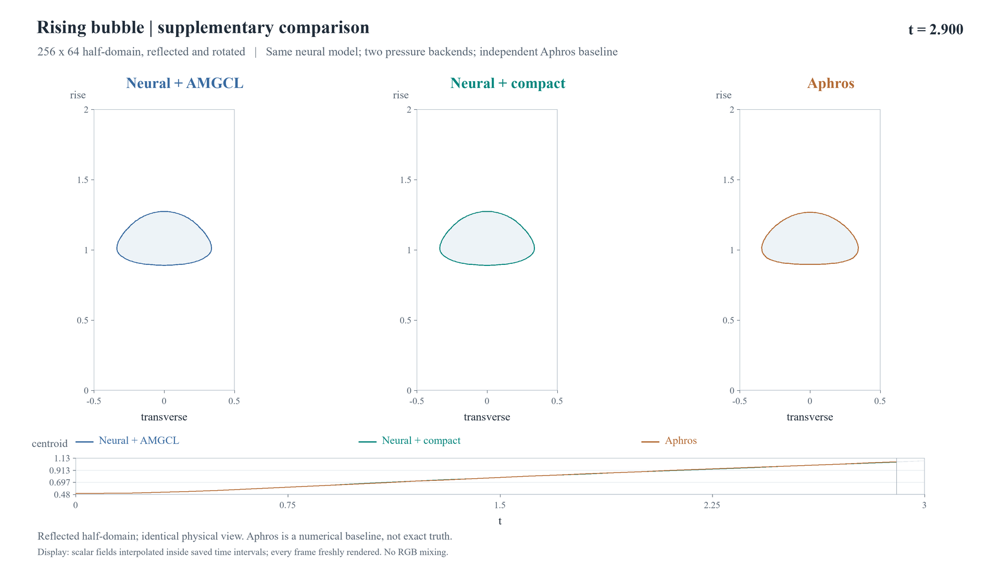
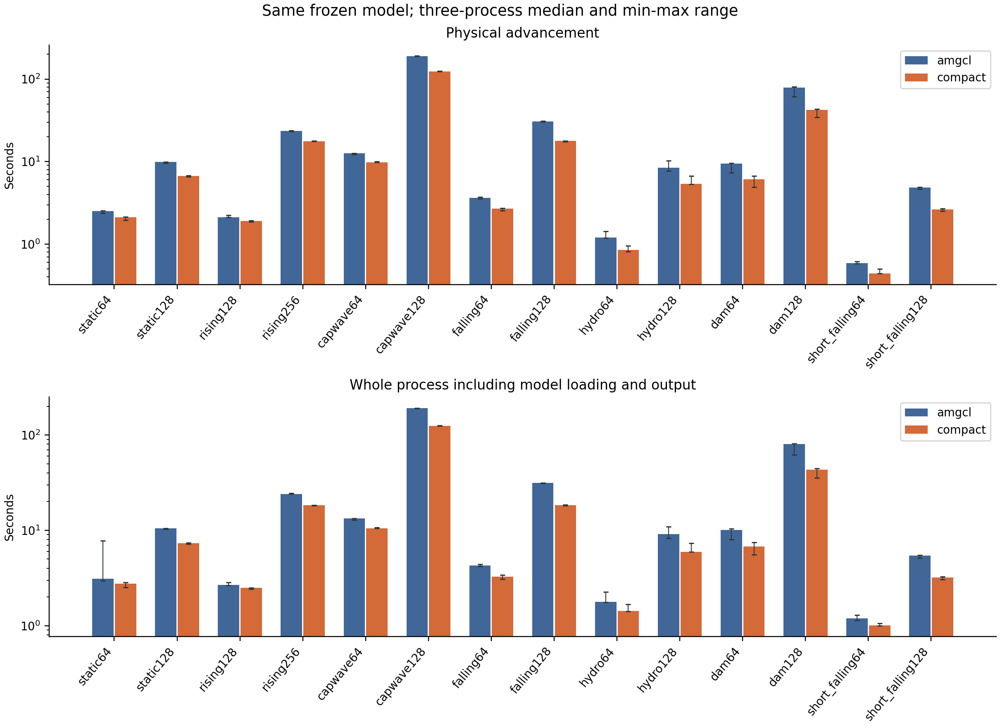
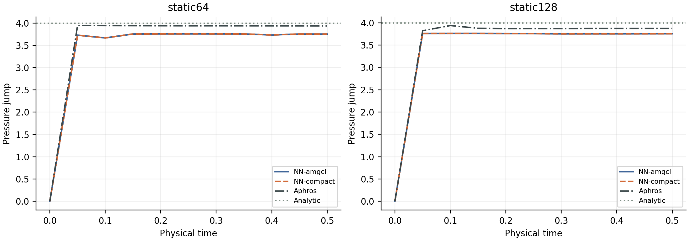
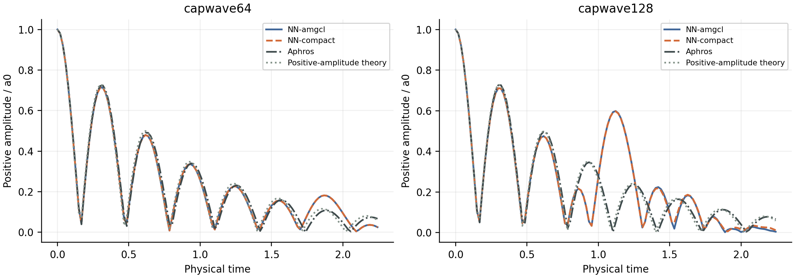
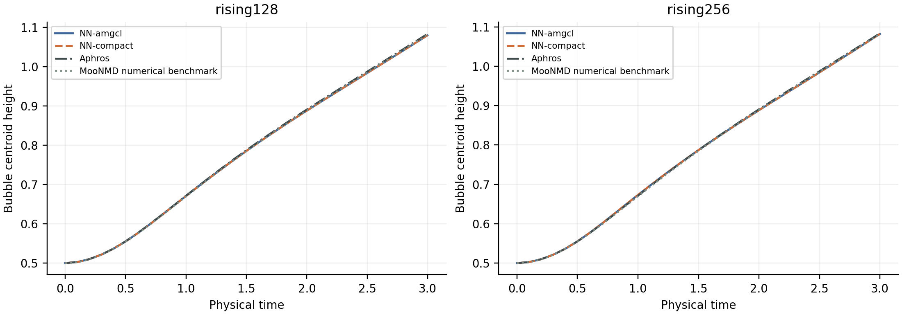
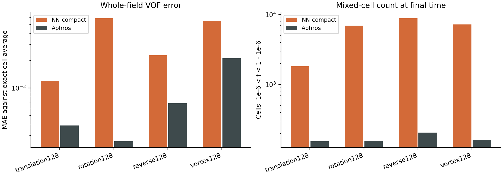
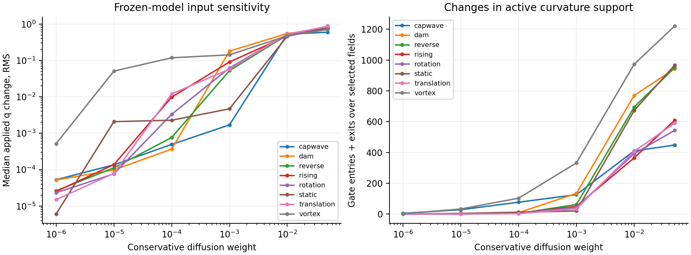
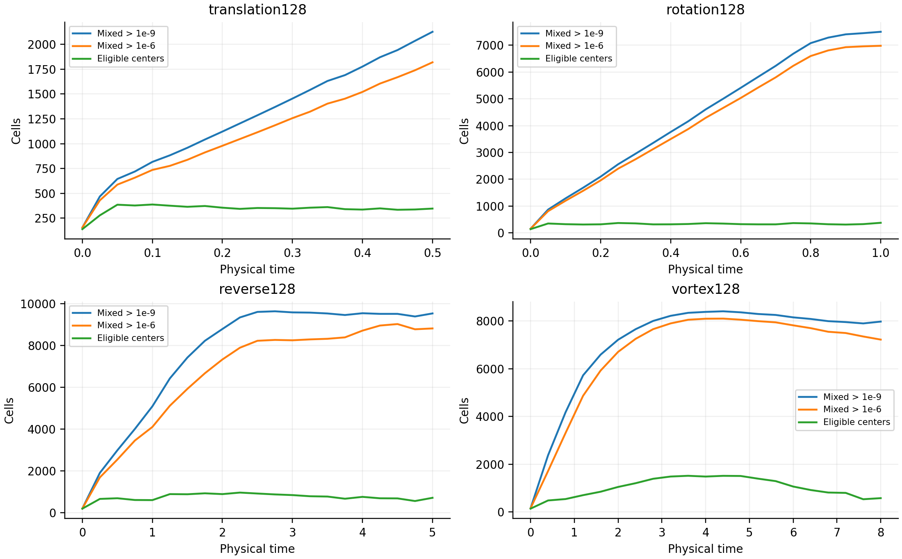

压力后端更快，界面精度仍有短板。
这轮把两件事分开验证：同一个神经模型换压力求解器，能省多少时间；神经界面与传统方法相比，误差到底在哪里。视频和数据都保留表现较差的算例。
本机推进时间收益
14 / 14 配置的 compact 中位数更快；每项 3 次。
对流精度仍落后
本次四项 128² 被动对流，神经末态 MAE 均高于 Aphros。
两后端最大已存 VOF 场差
长轨迹会分歧，不能说“换后端后结果完全一样”。
方法：从体积分数到完整两相流
按步骤解释训练标签、共享网络、64个正通量分箱、容量投影、曲率与表面张力，以及紧凑压力求解。提供符号表、28组公式、4幅矢量方法图、实际实验图和可拖动的通量例子。
另列完整训练课程、实验验证流程及创新点，说明结构性质的适用范围和仍需验证的改进方向。
先看真实的界面演化
7 段静音短片，每段 10–14 秒。三列依次是神经模型 + AMGCL、同模型 + compact、独立 Aphros。对流片只比较神经与 Aphros。

结果怎么读
01 · 压力求解：收益明确，但不等于普遍精度提升
固定神经模型后，compact 在 14 个配置中均缩短了本机推进中位时间。正常非零右端项的重算相对残差最大为 1.00e−8 左右，满足本轮 1e−8 目标；落滴和溃坝的长时间场仍产生了可见分歧。

展开全部 14 项压力后端结果
| 配置 | AMGCL 推进 / s | compact 推进 / s | AMGCL / compact | 三次 min–max：A / C | 最大已存场差 MAE |
|---|---|---|---|---|---|
| static64 | 2.524 | 2.101 | 1.20× | 2.376–2.542 / 1.958–2.134 | 1.902e-09 |
| static128 | 9.905 | 6.707 | 1.48× | 9.622–9.919 / 6.574–6.757 | 1.109e-10 |
| rising128 | 2.105 | 1.914 | 1.10× | 2.103–2.235 / 1.863–1.921 | 2.180e-04 |
| rising256 | 23.5 | 17.64 | 1.33× | 23.35–23.82 / 17.55–17.8 | 4.403e-04 |
| capwave64 | 12.62 | 9.799 | 1.29× | 12.13–12.65 / 9.784–10.02 | 8.829e-08 |
| capwave128 | 189.8 | 124.2 | 1.53× | 188.7–191.5 / 124–125.2 | 1.096e-04 |
| falling64 | 3.62 | 2.699 | 1.34× | 3.565–3.719 / 2.548–2.731 | 0.0051 |
| falling128 | 30.82 | 17.83 | 1.73× | 30.4–30.88 / 17.5–17.94 | 0.01543 |
| hydro64 | 1.195 | 0.8469 | 1.41× | 1.19–1.429 / 0.8077–0.9478 | 7.824e-09 |
| hydro128 | 8.413 | 5.356 | 1.57× | 7.68–10.24 / 5.285–6.681 | 1.353e-09 |
| dam64 | 9.421 | 6.084 | 1.55× | 7.351–9.562 / 4.914–6.695 | 6.116e-04 |
| dam128 | 79.33 | 42.45 | 1.87× | 61.17–80.63 / 34.55–43.57 | 0.01138 |
| short_falling64 | 0.5847 | 0.4398 | 1.33× | 0.5834–0.6117 / 0.4384–0.4979 | 2.418e-09 |
| short_falling128 | 4.832 | 2.644 | 1.83× | 4.615–4.888 / 2.502–2.682 | 1.913e-10 |
时间比大于 1 表示 compact 较快。压力组装、setup 和 solve 已包含在推进内，不能重复相加。其他 GPU 项目未停止，这些是本机观测，不是恒定独占资源下的算法极限。
收紧压力容差后，分歧消失了吗？
没有形成统一结论。128² 落滴的末态两后端 VOF MAE 为 0.01543 → 0.01592；溃坝为 0.01138 → 0.00812。这是容差敏感性，不是解析精度。更严格设置为 1e−10，重算残差最大为 1.0365e−10，AMGCL 溃坝有少量步略超设置值。四条补充轨迹并行执行，不纳入测速表。
02 · 神经界面：当前重训模型没有普遍优势
128² 静滴的压差相对误差是 6.11%，Aphros 为 3.15%。128² 毛细波正幅值 RMS / a₀ 分别为 0.1427 与 0.01789。气泡形状看起来接近，也需要结合质心、升速、圆度和面积变化判断。


展开气泡曲线与动态误差表

| 算例 | 评价量 | Neural + compact | Aphros |
|---|---|---|---|
| static64 | 解析压差相对误差 | 6.18% | 1.59% |
| static128 | 解析压差相对误差 | 6.11% | 3.15% |
| rising128 | 基准质心高度 RMSE | 8.674e-04 | 0.002007 |
| rising256 | 基准质心高度 RMSE | 0.001628 | 0.001545 |
| capwave64 | 正幅值 RMS / a₀ | 0.02998 | 0.02751 |
| capwave128 | 正幅值 RMS / a₀ | 0.1427 | 0.01789 |
| hydro64 | 去均值压力 RMSE | 19.78 | 19.82 |
| hydro128 | 去均值压力 RMSE | 8.054 | 8.113 |
03 · 对流尾迹：形状差不多，也可能留下很多混合格
涡旋返回时，神经方法的混合格为 7,219，Aphros 为 161；末帧 VOF MAE 分别为 0.005454 和 0.002127。低于门控阈值的残留可以留在场里：跳过推理不会自动清除它。

展开四项对流的全部终态指标
| 算例 | 神经末帧 MAE | Aphros 末帧 MAE | 混合格：神经 / Aphros | 神经门控外少数相面积 |
|---|---|---|---|---|
| translation128 | 0.001194 | 3.865e-04 | 1,819 / 155 | 4.226e-05 |
| rotation128 | 0.005839 | 2.599e-04 | 6,980 / 156 | 2.526e-04 |
| reverse128 | 0.002289 | 6.765e-04 | 8,823 / 206 | 2.546e-04 |
| vortex128 | 0.005454 | 0.002127 | 7,219 / 161 | 2.500e-04 |
混合格定义为 1e−6 < f < 1−1e−6。门控外少数相面积是 f<0.002 与 1−f<0.002 的面积积分。它、混合格数、整场误差与实际推理请求量是不同量。被动对流不调用压力求解器，两压力后端的保存场逐位相同。
04 · 曲率：误差与几何族有关，补数据仍需对症
本次 199 场曲率回归中，神经模型在平面、正弦和部分多谐波族占优；圆、椭圆和弱正弦等仍落后。没有证据支持当前神经曲率随网格加密普遍收敛。该基准属于已有开发回归，不能称为新的盲测。
展开 11 个几何族的曲率指标
| 几何族 | 场数 | 有效模板 | 神经物理 RMSE | 粒子物理 RMSE |
|---|---|---|---|---|
| capillary_wave_original | 19 | 2,642 | 0.01951 | 0.008195 |
| circle | 18 | 5,298 | 0.5068 | 0.3027 |
| ellipse | 18 | 5,084 | 0.696 | 0.3501 |
| four_lobes | 18 | 5,740 | 0.8554 | 0.3584 |
| gaussian | 18 | 2,916 | 0.4821 | 0.2957 |
| multiharmonic | 18 | 2,984 | 0.27 | 0.2861 |
| plane | 18 | 3,096 | 0.1174 | 0.2037 |
| sine | 18 | 3,096 | 0.1578 | 0.2081 |
| smooth_heart | 18 | 5,122 | 0.5866 | 0.329 |
| three_lobes | 18 | 5,402 | 0.6977 | 0.3309 |
| weak_sine | 18 | 2,562 | 0.01486 | 0.001601 |
表中神经与粒子误差使用共同有限支持、相同物理曲率单位 κ = q / h。没有给已变形的对流界面套用理想圆曲率。
输入轻微变化，模型会怎样响应？
24 份已有场、7 档保守平滑扰动、3 个 Courant 值。GPU 批量推理与 CPU 尾迹分析同时进行。这是输出敏感性，不是真实变形界面的曲率误差，也不能单独证明动力学失稳。


完整实验范围与复现边界
本页汇总 11 月 4–5 日的验证与补充，新的论文协议矩阵单独统计。基础验证与本次独立参照的设置不同，不把它们拼成一个统一排名。
展开完整实验清单
| 模块 | 已做内容 | 详细记录 |
|---|---|---|
| 训练与接入 | 原课程独立重训：bootstrap 60 epoch + 13 阶段，47.14 分钟；各阶段冻结推理、ONNX 与原生映射。 | 记录 |
| 局部通量 | 3,170 个模板 × 168 个 Courant = 532,560 次几何参考查询；原始输出、容量投影与门控分别评分。 | 记录 |
| 曲率与覆盖 | 固定物理形状逐网格重新积分；圆、非圆、7,000 个独立新模板与本次 199 场开发回归。 | 记录 |
| 同 host 归因 | 42 项通量 × 曲率四组合、解析曲率干预和控制。保留每种组合相同的重建与物理设置。 | 记录 |
| 加密与谱分析 | 60 个独立时间步、网格、压力容差配置；幅值、完整谱与固定初始分母的能量。 | 记录 |
| 对流与收支 | 同 host 被动输运、面通量/压缩/cleanup 收支；本次新增四项 128² 对流与独立 Aphros。 | 记录 |
| 压力与成本 | 312 项性质、55 个线性算例、30 个论文迭代数；同矩阵求解、内存、CPU/CUDA 和端到端成本。 | 记录 |
| 密度与网格压力测试 | 密度比 1–1000 的 16 项均匀流控制；奇数、矩形和 72 个困难系数场。 | 记录 |
| 本次协议补充 | 84 条有效神经动态、24 条神经被动、42 条 Aphros 动态、12 条 Aphros 被动；全部有效记录保留。 | 记录 |
| 条件扩展 | 复杂拓扑大规模扩展尚未执行：基础误差与边界问题先保留，不用更多华丽算例代替验证。 | 记录 |
基础同 host 的 128² 静滴归因：传统通量/传统曲率 2.174%，神经通量/传统曲率 2.143%，传统通量/神经曲率 6.370%，双神经 5.096%。该 T=1、统一关闭锐化的归因实验，与本次论文协议 T=0.5 独立 Aphros 对照分开报告。
模型身份。原共享骨干、输入输出、约束和课程保持不变。当前是独立完整重训模型；论文历史 edges64_v4_weak 二进制缺失，不能冒充原论文权重。
参考身份。原论文已取得只读快照。Aphros 的粒子曲率、锐化、容差、初始化和 CPU 资源与神经管线不同；跨代码成本只作为部署观察。
证据边界。312 项性质、55 个线性算例与 30 个论文迭代数支持压力算子结论，不代表整个多相模拟普遍更准确或更快。历史 V100 倍数未作精确复现。
有效数据。初次静水/溃坝研究驱动的 24 条错误初始化记录已排除并保留，只用修正后记录。时刻取原生全精度时钟，重复末帧原样保留，分析仅去除同刻且逐位相同的重复。
下载与追溯
本页可直接离线打开。视频与图片使用相对路径，转发时请一并保留同级文件夹。
每段视频的 4K 与 1080p 下载在播放器下方。完整实验记录和原始场保持原目录；视频只读取已接受数据，不重新训练或推进模拟。
补充实验：独立测试与多种子重训
新增封存几何、近纯尾迹时序、网格与时间步分离、两组完整重训，以及匹配误差目标的成本测量；另列保持原网络与推理约束的训练参数探索。